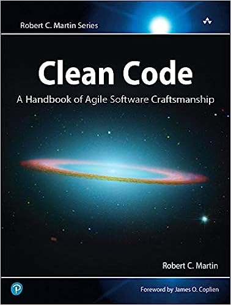
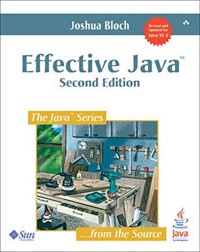
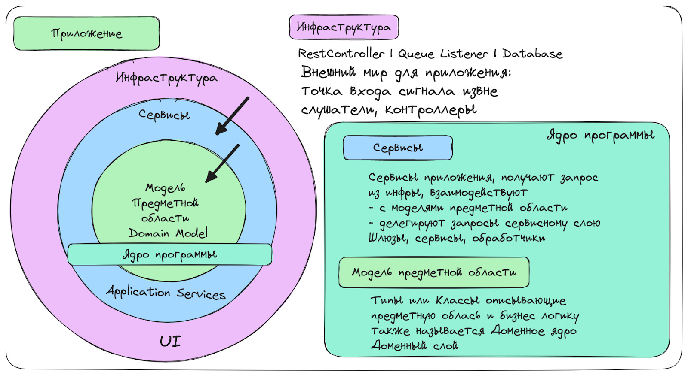

Как написать чистый код и сделать жизнь проще
Рассказали, что такое чистый код и зачем он нужен и опишем принципы его создания. Советы основаны на книгах по теме и личной практике.

Максим Морев
Автор статьи, Технический директор
В университетах, как правило, рассказывают базовые понятия: алгоритмы и структуры данных, вычислительную математику. Но не про то, как красиво спроектировать приложение и сделать код удобочитаемым и пригодным для доработок. В итоге на практике мы часто получаем бессистемный подход и нечто, что трудно читать, сложно и страшно рефакторить. Потому что явно что-то где-то да упадёт.
Чтобы не допускать такого, мы запускаем серию статей про код, где подробно расскажем, как писать красиво и чисто и получать на выходе поддерживаемый код. В первой части расскажем, что такое чистый код и зачем он нужен и опишем принципы его создания. А дальше на конкретных примерах разберём, как делать надо и не надо.
- Да кому вообще нужен этот чистый код?
- Как написать чистый код?
- Подробное руководство
- Как править НЕ чистый код?
Да кому вообще нужен этот чистый код?
Читаемый, легко тестируемый, легко компонуемый код, который решает бизнес-задачу и сам является документацией, сокращает ТТM (time to market). За счёт времени, которое разработчик тратит на изучение приложения, внесение изменений в код, добавление новых фич и прочее.
И если приложение плохо спроектировано, код спутан — продуктивность команды, которой приходится разбираться с этим примерно 70% рабочего времени, падает. Это факт. И я с ним сталкивался.
Так что, по сути, он нужен всем, кто работает в IT.
Разработчикам
В первую очередь для того, чтобы быстро анализировать и дорабатывать уже готовый код — в том числе собственный, написанный два месяца назад и благополучно за это время забытый. Так, сокращаем TTM.
К тому же, если мы плохо проектируем, плохо пишем, плохо автоматизируем, плохо доставляем, структура начинает тормозить, возникают ошибки. И приходят бизнес, лиды, тестировщики с претензиями, баг-репортами и доработками.
Чистый и юзабельный код не ценность — а обязанность. И чем он однообразнее, скучнее и проще тем проще нам автоматизировать процессы.
Лидам
Лиды, как и разработчики, отвечают за качество готового продукта. И им чистый код помогает быстрее проводить ревью, переключаться между задачами и следить за соблюдением соглашений.
Бегите из команды, если ваш техлид говорит: «Чистый код — это миф. А те, кто пишут про него книги, статьи и доклады, не работают, а выдумывают теорию, которая на практике неприменима».
Бизнесу
Бизнесу доклады про эстетику и красоту кода неинтересны. Бизнесу важна скорость появления фичей и отсутствие багов.
Так что чем быстрее работает команда, чем больше качественных продуктов и доработок она выпускает, тем больше бизнес может заработать.
Хорошо, и как тогда написать чистый код?
Сперва почитать хорошие книги Да, лень — но надо. Всё хорошее и «правильное» уже придумано, и чтобы писать код грамотно, необязательно 5 лет изобретать велосипеды, как это делал я.
Рекомендую читать Роберта Мартина, Владимира Хорикова, Джошуа Блоха, Скота Влашина, Стива Макконнелла и стремиться к профессиональной простоте кодирования. Важно: старайтесь читать книги в оригинале.

Clean Code: A Handbook of Agile Software Craftsmanship
Effective Java (2nd Edition)Важно понимать, что некоторые топики, которые тот же Мартин отстаивал в 2008, уже не актуальны. Советую отсеивать их и просто забирать полезное.
Обратить внимание на принципы Unix
- Write programs that do one thing and do it well — Каждая программа, класс, функция выполняет одну задачу — и выполняет хорошо.
- Write programs to work together — Программы работают совместно, и мы можем выстроить пайплайн. Компоненты на разных уровнях работают вместе и взаимодействуют посредством классов.
- Write programs to handle text streams, because that is a universal interface — Программы взаимодействуют, используя универсальный текстовый интерфейс, а классы — код. Тип — универсальный интерфейс взаимодействия функций и классов.
Эти принципы помогают мне осознавать архитектуру в срезе сложного приложения, и проектировать программы/классы/функции.
Unix-философия хорошо подходит для проектирования микросервисов (программ). Поэтому я рекомендую исследовать мир Unix и использовать Linux разработчикам.
Внимательно прочитать руководство ниже
Здесь я привёл основные рекомендации по написанию чистого кода, основанные на многих годах практики и книгах «Чистый код» и «Чистая архитектура: Руководство ремесленника по структуре и проектированию программного обеспечения».
Всегда улучшайте код, с которым работаете
Мартин использует «Правило бойскаута» и призывает улучшать кодовую базу постоянно (так же, как бойскауты оставляют кемпинг в лучшем состоянии, чем он был до визита). Это очень важная жизненная идея.
Поддерживайте свой код в хорошем состоянии. Исправляйте ошибки как можно раньше, удаляйте неиспользуемый код и обновляйте его, чтобы он соответствовал новым требованиям.
И если нашли «сомнительную, странную дичь» в старом коде — соберите команду, обсудите то, что обнаружили. Вероятно, это «нечто» именно то, что стоит улучшить — или вовсе избавиться.
Think twice, code once
Прежде чем приступить к разработке, доработке, рефакторингу, разберитесь в том, как функция/система работает по данному потоку. Станьте экспертом в предметной области.
Используйте функциональную парадигму
Она загоняет нас в рамки чистого кода и способствует следовать лучшим практикам. Кроме того, чистое ООП в программах не нужно. Серьёзно, нет.
Это тема для отдельной статьи, но тут поделюсь фактом: в нескольких больших банках функциональная парадигма — стандарт де-факто при написании микросервисов. И советую почитать, что Роберт Мартин пишет в блогеAnd the future is looking very functional to me.
Делите код на слои
Каждый слой должен выполнять определённую функцию и быть независимым от других слоёв.
- Разделяйте логику и представление, чтобы упростить тестирование и обеспечить независимость компонентов.
- Используйте Вертикальное разделение. «Переменные, функции должны быть определены близко к тому месту, где они используются» (G10 Vertical Separation Clean Code, page 292).
- Опирайтесь на луковичную архитектуру, где внутренний слой ничего не знает о внешнем — это помогает визуализировать и проектировать структуру приложения.

Как написать чистый код и сделать жизнь проще 3 Пара материалов по теме:
- 5 essential patterns of software architecture
- 14 software architecture design patterns to know
- The Onion Architecture : part 1
Соблюдайте принципы SOLID для проектирования сервисов, классов и функций
Нам особенно важен «Принцип единственной ответственности (Single Responsibility Principle)» для классов и функций, сервисов:
«Каждый класс или функция должны выполнять только одну задачу».
То есть пишите функции, которые делают только одну вещь — и делают её хорошо. Есть несколько способов убедиться, что выполнили это правило:
- функция выполняет только те действия, которые находятся на одном уровне с объявленным именем, выполняет задачу как бы замкнуто в своём теле; и если какие-то запросы пролетают наружу, как это бывает в функциях сервисов приложений, то через шлюзы;
- функция выполняет действия, которые находятся на одном уровне абстракции;
- из одной функции не получается выделить другие;
- функцию не получается разделить на секции.
Избегайте наследования
Сложные иерархии наследования приводят к путанице и проблемам отладки. Постарайтесь ограничить сложность класса, сохраняя связанную функциональность вместе, а не распределяя её по нескольким уровням абстракции.
Предпочитайте полиморфизм операторам If/Else
Приложение будет более гибким, если мы вынесем поведение в классы, убрав тем самым бизнес логику принятия решений, ветвлений в родственные доменные классы.
DRY
Код должен быть повторно использован только тогда, когда имеет ту же ответственность.
Если вы используете один и тот же код несколько раз, выносите его в отдельную функцию (класс, компонент, сервис) чтобы избежать дублирования и упростить поддержку.
Не увлекайтесь DRY при написании тестов. Универсальность в них часто уменьшает читабельность, а значит, ясность. Помните, тест — это документация.
Классы не должны знать о внутренней реализации других классов
Не думайте о внутренней работе юнита (класса, функции) — лучше смотреть на него, как на чёрный ящик. Это поможет при проектировании и писании прекрасно тестируемого кода.
G22: Make Logical Dependencies Physical
Если один модуль зависит от другого, эта зависимость должна быть физической, а не только логической. Также зависимость должна быть очевидной
Используйте понятные и описательные имена
Для всего: переменных, функций, классов и других элементов кода. Избегайте сокращений и аббревиатур.
Форматируйте код
Казалось бы, очевидное правило. Но как показывает практика — нет. Поэтому:
- открыли класс в Idea, нажали Ctrl + Alt + L, продолжаем работу;
- одной пустой строки в отступах между блоками в коде достаточно.
Современные IDE умеют форматировать перед коммитом или при сохранении файла. Но лучше один раз вручную установить стандарт — и потом придерживаться его средствами автоматизации.
Опирайтесь на 3 закона TDD
- You may not write production code until you have written a failing unit test — Мы не выпускаем в прод код, который не покрыт тестами.
- You may not write more of a unit test than is sufficient to fail, and not compiling is failing — Покрываем тестами код в достаточном количестве, чтобы убедиться, что данный слой (класс, функция) работает верно. Не дублируйте тест кейсы на разных уровнях.
Если все сделали правильно: покрыли юнит-тестами бизнес-логику, не нужно дублировать проверку всех бизнес-кейсов интеграционными тестами. - You may not write more production code than is sufficient to pass the currently failing test — Написал код — написал тесты. Или в обратном порядке.
Эти законы можно интерпретировать и использовать и тем, кто не придерживается каноничного TDD.
Не используйте исключения для обработки ошибок
Мартин рекомендовал в своё время использовать исключения. А я — нет. Исключения для нас — только сигналы багов. А для обработки ошибок мы используем R.O.P.
Комментарий — признак плохого кода
Пишите комментарии внутри кода только тогда, когда они объясняют, не что код делает, а почему он написан таким образом.
Общее правило для большинства случаев: если вам приходится добавлять комментарии — перепишите код.
Задавайте границы для внешних библиотек и систем
Оборачивайте внешние библиотеки или API в API который подходит вашему дизайну — это даст запас прочности.
Применяйте Anti-corruption Layer pattern в дизайне кода. И используйте юнит-тесты.
Живите в парадигме Null Safety
Не передавайте null
Не возвращайте null
Не используйте null
Размер функции или метода — максимум пять строк
Об этом пишет Кристиан Клаусен в книге «Пять строк кода» которую Роберт Мартин рекомендует.
Сам Мартин указывает, что размер функции не должен превышать 20 строк по 150 символов каждый, но чем меньше — тем лучше.
Идеальное количество входных параметров для функции — один
Параметры усложняют функцию и запутывают её восприятие. Особенно это касается выходных — потому что мало кто ожидает, что функция в аргументах будет возвращать значения. Поэтому:
- функция не преобразует входной аргумент;если вы видите такую функцию или написали её только что, исправьте — результат изменения нужно передавать в возвращаемом значении — и точка;
- некоторые аргументы стоит упаковать в отдельном классе — так советует старина Блох, отец Макконэл, советую я.
Отделите бизнес-логику предметной области от логики приложения
Например, бизнес-правила, консистентное состояние объектов в системе, проверки ограничений (валидация), расчёты, используемые в решении, не следует путать с техническими деталями, такими как схема базы данных, интеграции с внешними системами, сервисами уровня приложений и уровнем DTO.
Наконец, помните, что написание чистого кода — это ремесло и где-то даже искусство, которое требует практики и терпения. Не бойтесь переписывать код, если это поможет улучшить его качество и поддерживаемость. А если ищете элегантное простое решение, смотрите кукбук.
А если мне попал в руки НЕ чистый код?
Тогда начинаем рефакторинг. Я использую такой алгоритм:
- Просматриваем приложение сверху вниз, оцениваем насколько оно хорошо спроектировано и как описаны классы.
- Узнаем у автора этого непотребства, что делает сервис.
- Открываем Readme и в функциональном стиле описываем назначение сервиса. Нам пригодятся Markdown Best practices. Лучше визуализировать процесс (например, с помощью ExcaliDraw) это поможет представить правильную картину и структуру классов.
- Продумываем, как будем всё это тестировать. Если всё выглядит совсем монструозно, я предлагаю воспользоваться дорогими, но покрывающими максимум кода интеграционными тестами. Раз уж это творение орков работает, зафиксируем состояние и покроем крайние точки тестами. Проверенная тактика.
- Во время рефакторинга сразу покрываем код юнит-тестами. На выходе получим простой элегантный дизайн в функциональной парадигме, которая способствует следованию хорошим принципам дизайна и рекомендациям Мартина в частности.
А что дальше?
В первой части я описал смысл и принципы чистого кода. В следующей мы проанализируем приложение на предмет чистоты кода. Я пройдусь по каждому классу и опишу недостатки. И расскажу, как это исправлять.